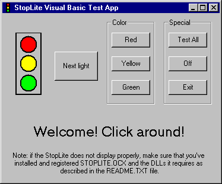

|
| ||
|
| ||
Paul Johns
Developer Trainer
October 22, 1996
Because of its length, this article has been divided into two parts for ease of reading on the Web. This is Part I.
Contents for Part I
Introduction
Ways to Write an ActiveX Control
Using MFC for ActiveX Controls
What's This Article About?
How Is This Article Organized?
What Does an MFC Control Look Like?
MFC Classes for a Control
Creating the Control with AppWizard
Which Version of MFC Should I Use?
Creating the Skeleton
Running the Skeleton
A Tour of the Code
Contents for Part II (continued in a separate HTML file)
Specification of the StopLite control
How I Wrote StopLite
Properties
Control Properties
Ambient (Container) Properties
Methods
Stock Methods
Custom Methods
Events
Stock Events
Custom Events
Making the Control Draw
Drawing the StopLite Control
Responding to Windows Messages
Property Pages
Notifying Your Container of Errors
From Within a Method Call
In Other Situations
Notifying Your Container of Errors
A Brief Note about Security Issues
Code Signing
Marking Your Control as Safe
Using Visual C++ and Test Container to Debug the Control
Debugging Output You Can Safely Ignore
Creating a Web Page Using the ActiveX Control Pad
Conclusion/Where to Learn More
Related article: Signing and Marking ActiveX Controls.
(Click for a list of files that accompany this article.)
ActiveX™ controls (formerly known as OLE controls) are hot stuff, with more than 1,000 controls currently available. They can run in a wide variety of containers -- Visual Basic®, Visual C++®, Microsoft® Access, and, as we all know, Microsoft Internet Explorer 3.0. (They also can be used by Delphi® and Netscape™ Navigator -- and perhaps other containers.)
ActiveX controls are also cool because they are what I call "scalable." Their functionality can be very simple, such as a timer control, or very complex, such as a data-bound grid, spreadsheet, or word processor control. Most controls fall somewhere in between.
This scalability is important because you can use ActiveX controls as reusable software components in bigger applications. For instance, this article shows you how to write a stoplight control. I can hear you thinking now, "Well, that's interesting, I suppose, and cute -- but how useful?"
Okay, what would happen if we wrote a few other controls -- say a road control, a vehicle control, and a master controller control? Remember, ActiveX controls feature two-way communication with their containers (in this case a Web page), so the controls can interact with each other via scripting on the page! With those components, how easy would it be to put together traffic simulations of any intersection or set of intersections you wanted?
One of the cooler Java applets out there is a traffic simulation written by Kelly Liu. It's at http://sunsite.utk.edu/winners_circle/unlimited/UNAL2I6J/applet.html  . (This link points to a server not under the control of Microsoft Corporation. Please read our disclaimer before continuing.) It's multithreaded, active, and it runs great, especially with Internet Explorer 3.0's way fast just-in-time compiler.
. (This link points to a server not under the control of Microsoft Corporation. Please read our disclaimer before continuing.) It's multithreaded, active, and it runs great, especially with Internet Explorer 3.0's way fast just-in-time compiler.
But as cool as the Java applet is, it's limited because it's monolithic. One big happy applet. Even the buttons are part of the applet. And the only way to do something that the programmer didn't plan for is -- you guessed it -- to modify the source code and recompile.
Now, back to ActiveX. The stoplight control we're going to write here is only a very small piece of such a simulation. But it is a start -- and the stoplight component we write here could be used as-is in a larger simulation. By the same token, all ActiveX controls can be used (and reused) as components in larger applications.
I hope you'll agree that ActiveX controls are cool. And now I'll bet you're asking, "How can I get a piece of this ActiveX action?"
Right now, there are four ways to write an ActiveX control.
(More ways to write ActiveX controls will be available soon. A later version of Microsoft Visual J++ will support the writing of complex ActiveX controls, as will the next version of Visual Basic. So you'll have tools and frameworks for every taste and need -- except perhaps COBOL®.)
Using the ActiveX Template Library requires intimate knowledge of how OLE controls communicate with their containers -- and implementation of over a dozen OLE interfaces for controls with user interfaces. The BaseCtrl framework is much simpler, but still requires more knowledge of OLE than does MFC. Visual J++ makes it very easy to write COM objects, but it's best used for pretty simple objects. We'll be doing articles about those other methods for writing controls in the future.
For most folks, we recommend using MFC because MFC controls are easy to write. You focus on your control's behavior, not the intricacies of OLE interfaces. And, with the new features of MFC 4.2, you can write controls that perform better and implement the cool new OCX 96 features. (You may want to stick with version 4.1 though; since the MFC 4.1 DLLs ship with Internet Explorer, all Internet Explorer 3.0 users will already have these DLLs properly installed on their system.)
But every silver lining has its cloud -- and there are two big MFC clouds.
The first is that MFC controls, while not huge, are not tiny. If you're developing controls that don't need the full functionality of an OLE control, you might want to check out other options -- perhaps after prototyping in MFC.
The second cloud is bigger and darker, but might not be in your sky. To run an ActiveX control written with MFC, the correct version of the MFC and C Runtime DLLs must be installed on the user's system. These DLLs are over a megabyte total -- quite large to be downloading at 14.4Kbps! The good news is that Internet Explorer 3.0 ships with version 4.1 of the MFC DLLs, so most users will have them installed already. Even if you use the 4.1 DLLs, be prepared to provide and install the DLLs for users running your control in clients other than Microsoft Internet Explorer. Also, you'll have to provide the MFC 4.2 DLLs to all users if you need MFC 4.2 features in your control.
In this article, we're going to show you how to write a simple yet complete ActiveX control using MFC. We're using Visual C++ version 4.1, but the code should work with any compiler that supports MFC version 4.0 or later. Your Wizard support may vary, however. We show all the code that the Wizards generate and modify so you can follow along regardless of your tools.
We aren't going to go into advanced topics -- no discussions of how to asynchronously download video clips over the Internet, nor transparent controls -- and only minimal discussion about over-the-Internet installation, code signing, and marking your control as safe for initializing and scripting. For now, just the basics.
As we mentioned before, this control is a little on-screen stoplight. To keep the filename under eight characters without spaces (do this -- it makes your life simpler!), I called the control StopLite. It looks like this:
You should be able to cycle the StopLite by left-clicking on it.
Note: if the StopLite does not display properly, make sure that you've installed and registered STOPLITE.OCX and the DLLs it requires as described in the DLLREQ.ASP file.
If you're using Internet Explorer 3.0 or another ActiveX-activated browser, you can left-click on the control to change the color of the light. Click to see the HTML code used to insert either the control in browsers that can display it or a bitmap of the control in browsers that can't display the control. (Tip: if you're using Internet Explorer, you can hold down the SHIFT key while you click the link to open the link in a new copy of Internet Explorer.)
When the control is embedded in a Web page, it looks like this:
This page uses JavaScript to link the controls. Click the buttons and the StopLite and see what happens!
Shift-click to view the source for the page above in a new instance of Internet Explorer. I've used JavaScript™ to hook up the buttons and label control to the StopLite control; I could as easily have used Visual Basic® Scripting Edition (VBScript). (Click to see the JavaScript and VBScript pages.)
If you're using Internet Explorer 3.0 or another ActiveX-activated browser, you can click the buttons to change the light. The Next Light button invokes the Next method, which changes the light to the next color (in the sequence red, green, yellow, red...). The color buttons change the light to the specified color, while the Off and Test buttons turn the lights all off and all on, respectively.
The StopLite control also fires events as it changes. These events change the label just underneath the button from "Welcome to PaulJo's StopLite page!" to other appropriate messages.
One great feature of ActiveX controls is that they can be used in containers other than Web pages. Here's a Visual Basic app that uses the StopLite control:

Since Visual Basic doesn't (yet) support writing ActiveX controls, we can't provide a live example. However, the next version will support writing both ActiveX controls and ActiveX documents, so we'll be able to give you an example then. And you can click to load the StopLite Visual Basic Test App.
In both the Visual Basic and the HTML uses of this control, the buttons, control, and label are hooked together using Visual Basic code.
We're going to show you how to write this control. But first, I want to give a you a little bit of background about the architecture of MFC controls. Then we'll look at the code that AppWizard generates. Finally, we'll modify that skeleton to create the complete StopLite control.
MFC controls are considerably simpler than MFC applications. The simplest MFC control has only three classes: a control module class derived from COleControlModule (which in turn is derived from CWinApp), a control window class derived from COleControl (which in turn is derived from CWnd), and a property page class derived from COlePropertyPage (which in turn is derived from CDialog). Assuming that the name of the control is StopLite, the name of the control module class is CStopLiteApp, the name of the control class is CStopLiteCtrl, and the name of the property page class is CStopLitePropPage.
CStopLiteApp is very similar to the CWinApp-derived class that's at the core of your MFC applications. Only one object of this class will be in your control module, no matter how many controls might be in this module.
CStopLiteCtrl is the class in which you'll do 99.44% of your work. It has functions that implement all of the properties and methods, and fire all the events. It also is responsible for drawing the control and responding to Windows messages.
If your control module (.OCX) contains more than one control, you'll have an additional class for each control. Each class will be named CXxxxCtrl, where Xxxx is the name of the control encapsulated by that class.
CStopLitePropPage is very similar to a dialog box class. It's used to implement the code needed to connect the dialog box template you'll write for your property page to the properties in your control.
Because ActiveX controls written using MFC require the appropriate MFC DLLs to be present and registered on the user's system, you have to ensure sure that every user has the correct DLLs properly installed.
In general, you need to provide a setup script that sets up your control and all the DLLs it needs. This setup script should not overwrite DLLs that are of a later version than the ones it installs. It also might need to register some or all of the DLLs it installs. We'll have articles about installation, code signing issues, and marking controls as safe for scripting and initializing soon. For now, check your development environment's documentation for installation requirements and the Site Builder Workshop for information on installations, code signing, and marking controls as safe.
To reduce the amount of code that needs to be downloaded before your control can be used, you may want develop your control so that it takes advantage of DLLs already present on your users' systems. For instance, Internet Explorer 3.0 installation always installs the version 4.1 MFC DLLs, as does Windows NT 4.0.
If you don't need any of the new features in later versions of MFC, stick with MFC (and Visual C++) version 4.1 so that most of your users won't have to download those big DLLs. But not all users will have the DLLs, so you'll also have to come up with an optional scheme for users to get them.
Because the StopLite control doesn't use any version 4.2 features, I stuck with Visual C++ version 4.1 to make life simpler. I had to reinstall Visual C++ version 4.1, but that was better than requiring everyone to download the version 4.2 DLLs. (There are directions included with Visual C++ 4.2 that tell how to install both version 4.1 and version 4.2 on the same system.) If you need 4.2 features, don’t despair: you can link a compressed self-installing version of the DLLs you need by following directions at http://www.microsoft.com/visualc/download/mfc42cab.htm  . This file will take your users less than four minutes to download (at 28.8Kbps), so it may be worth using 4.2 in many situations.
. This file will take your users less than four minutes to download (at 28.8Kbps), so it may be worth using 4.2 in many situations.
The first step in creating any MFC project, including a control project, is to use Visual C++'s AppWizard to create the skeleton code. I've used Visual C++ 4.1 for this control, but the directions should work with any version 4.0 or later. I've tested these directions with versions 4.1 and 4.2.
To get started, select "New" on the File menu, then select "Project Workspace." This will allow you to select a type of project. Select "OLE ControlWizard" to create an ActiveX control. Fill in the name of the project and the directory in which you want the control placed. (In case you're following along, I've called this project "StopLite" -- note the capitalization and spelling.) Keep the filename eight characters or less. Although Visual C++ generally deals with long filenames correctly, some other tools have trouble with them, especially if the names contain spaces.
Clicking "Create" will start the OLE ControlWizard. While it looks as though you have two pages of options, there are really three -- you access the third page by clicking the "Advanced" button on the second page. We're going to use all the default options, so don't change anything. Just take a look at the options and click "Finish" when you're done. (We'll get into some of these other options, and more, in later articles.)
After you click "OK" on the summary page, the OLE ControlWizard will generate your new project. For more information on the OLE ControlWizard, look up "OLE ControlWizard" in Visual C++'s Books Online.
This project is ready to go. You can build it now by selecting "Build StopLite.OCX" from the Build menu or by pressing the F7 key. If you need more assistance with AppWizard, consult Visual C++'s Books Online.
Once you've built the control, it's easy to test it in the OLE Control Test Container that comes with Visual C++. Select "OLE Control Test Container" from the Tools menu, pick "Insert OLE Control" from the Edit menu (or click the Insert button), and select your control ("StopLite") in the list box. Because we haven't modified the drawing code, we get the ControlWizard-provided code, which draws an ellipse that fills the control area. You can see that the control automatically scales the ellipse by resizing the control.
The control container also allows us to view and change the control's properties (View.Properties -- we don't yet have any, but we will...), call its methods (Edit.Invoke Methods -- ControlWizard wrote an AboutBox method for us. Try it!), and view a log of events fired (View.Event Log -- we don't fire any events yet). You can also invoke the control's (blank) property page (Edit.Properties).
Finally, you can view and change the container's ambient properties (Edit.Set Ambient Properties). However, we don't yet have the code in place to access those ambient properties, so changing them will have no effect on the control.
There are toolbar buttons for all of these functions.
For more advanced testing, the control container has a wide variety of options you can use to exercise the control.
Now that we've played with the control a little bit, let's examine the code that the OLE ControlWizard generated for us. To get a copy of the code, you can either run Visual C++'s OLE ControlWizard yourself as described above or click to download the original source. Or, view the code online by shift-clicking to display the index in a new browser window.
There are two significant difference between code generated by Control Wizard 4.1 and 4.2. Either of these differences will keep your project from building if you're moving 4.2 code back to 4.1.
The first difference is that 4.2 adds a line
#include <idispids.h>
near the beginning of your .ODL file. IDISPIDS.H is only available with Visual C++ version 4.2, so comment this line out of you're moving the code back to 4.1.
The second difference is in the call to AfxOleUnregisterTypeLib. This difference is described below in the section that talks CStopLiteApp.
ControlWizard has generated a bunch of files for us -- a .RC file, an .ODL file, a .DEF file, and four pairs of .CPP and .H files -- the usual STDAFX.H/STDAFX.CPP, plus a pair for each of the classes ControlWizard creates.
To look at these files, shift-click the links in the text below.
The .RC and .DEF (StopLite.DEF) files are the standard resource and linker definition files. The .ODL (StopLite.ODL) file contains type information for OLE. You can look at this file, but you needn't edit it. ClassWizard will automatically modify it as you add properties, methods, and events.
The STDAFX.CPP and STDAFX.H files are the usual files Visual C++ generates to enable creation and maintenance of the pre-compiled header (*.PCH) file. STDAFX.H includes MFC (and, indirectly, Windows) headers; STDAFX.CPP, which contains an #include of STDAFX.H, exists only so the pre-compiled type information will go to STDAFX.OBJ.
The control itself consists of three classes: a control module (or application) class called CStopLiteApp, a property page class called CStopLitePropPage, and the main control window class called CStopLiteCtrl. Before continuing, you can print out at least the three major .CPP files so you can look at the code while you read.
(Shift-click to load the StopLite.H and StopLite.CPP files into new browser windows.)
This class is analogous to the CWinApp-derived class that's at the heart of regular MFC applications -- it's even derived, via COleControlModule, from CWinApp. There will be only one COleControlModule object in your .OCX, even if your .OCX supports multiple controls. You rarely need to modify this class, and for this example, you won't need to modify it at all. (You might need to modify it if you have multiple controls in the same module that need to communicate with each other.)
In addition to the InitInstance and ExitInstance member functions for module initialization and cleanup, these files also contain the DllRegisterServer and DllUnregisterServer global functions you need to have in a "self-registering" control and some read-only global variables: two WORDs, which contain the control's major and minor version numbers, and the GUID for the control's type library.
This file contains the only significant difference between the code generated with Visual C++ version 4.1 and version 4.2. In version 4.1, the DllUnregisterServer function contains the call:
if (!AfxOleUnregisterTypeLib(_tlid))
In version 4.2, the function adds the version number to the call, as is supported by an update to the AfxOleUnregisterTypeLib function:
if (!AfxOleUnregisterTypeLib(_tlid, _wVerMajor, _wVerMinor))
If you've generated your project with version 4.2, you'll have to change the line above to the version 4.1 call in order to compile under 4.1.
(Shift-click to load the StopLitePropPage.H and StopLitePropPage.CPP files into new browser windows.)
This class is the code for the property page that we'll use to view and set the control's properties. It's actually the code for an individual property page, not for the property page tabbed container, which is called a property sheet.
CStopLitePropPage is derived from COlePropertyPage, which is derived from CDialog. Therefore, CStopLitePropPage behaves much like a standard MFC dialog box. It has the usual message map and DoDataExchange function that all MFC dialog boxes use. (Some new data exchange functions for exchanging data with the control's properties that begin with DDP_ are used in addition to the DDX_ functions in regular modal dialog boxes.)
The control's property page has a few additional pieces that a regular dialog box doesn't have. First, it's declared for dynamic and OLE creation via the IMPLMENT_DYNCREATE and IMPLEMENT_OLECREATE_EX macros (and their corresponding DECLARE_ variants in the header file). Note that the IMPLEMENT_OLECREATE_EX macro also takes and uses a GUID for the ID of the property page.
Lastly, the property page has a function called CStopLitePropPage::CStopLitePropPageFactory:: UpdateRegistry, which registers and unregisters the property page with OLE. This function will be called by MFC when the control is being initialized and destroyed. As the syntax indicates, this function is a member of a class nested inside of CStopLitePropPage.
(Shift-click to load the StopLiteCtl.H and StopLiteCtl.CPP files into new browser windows.)
This class is the most important class in your control. It's where all the action takes place. Except for the property page code, all the code that ClassWizard adds and you edit will go into this class. Note that if this .OCX implemented more than one control, there would be more than one control class. Since this file is large, let's describe the parts of it as they appear in StopLiteCtl.CPP.
First, CStopLiteCtrl has a message map -- after all, it's derived from CWnd, which is a command target. In addition, it has a couple of other maps. The dispatch map contains entries for all the properties and methods you implement, while the event map contains entries for all the events you fire. ClassWizard will maintain all of these maps for you.
Next, we have a data structure that contains information on our property page(s), followed by some macros to implement OLE creation and our type library. After this are GUIDs for the two dispatch interfaces used by this control: IID_DStopLite for its properties and methods, and IID_DStopLiteEvents for the events that will be fired to the container.
After that is a rather important variable: _dwStopLiteOleMisc. This variable, which is passed to AfxOLERegisterControlClass later on, contains flags that tell OLE how to create this control and what kind of control it is. See the documentation on the OLEMISC enumeration for information about what these flags mean.
You will need to change CStopLiteCtrl::CStopLiteCtrlFactory:: UpdateRegistry, the next function, if you want to mark your control as safe for scripting and/or initialization. (You could also modify DllRegisterServer, but it's a little more convenient to change UpdateRegistry because the control's class ID is readily available.) To mark the control as safe for scripting and initialization, call helper functions that register a component category and register the control as belonging to a category. Because all the of the control's registry entries are deleted when the control is unregistered, you don't have to do anything special to unregister the control. (You should not unregister the categories -- other components installed later might need them!) I also added the above-mentioned helper functions (in HELPERS. CPP and HELPERS.H), copied directly from the ActiveX SDK.
So UpdateRegistry just registers and unregisters the control's OLE class. Be sure to read and heed the warning about writing your code correctly so it can run as a multi-threaded apartment model object. All of the details are in MFC Technote 64; for now, just avoid any non-constant global or static member variables. (We won't be using any -- they're not really necessary.) It's very important for controls used in Internet applications to be compatible with the apartment threading model -- otherwise, performance will suffer greatly if your Web page has more than one control from your control module.
Next is a nearly-empty constructor and an empty destructor that you can add to if needed. You do not need to initialize members that correspond to persistent properties; these will be initialized from persistent data (or default values, if the persistent data is not present) when the control is started.
CStopLiteCtrl is derived from COleControl, which in turn is derived from CWnd. Therefore, it can do basically anything that any window can -- draw itself, respond to messages, and so on. However, rather than drawing in an OnPaint function, OLE controls draw in a function called OnDraw. We'll change OnDraw soon to make it draw a stoplight rather than an ellipse. OnDraw differs from CView::OnDraw and from CWnd::OnPaint in two ways. First, you are passed a rectangle representing the extent of the control. You must not draw outside this rectangle. Second, you must erase the control's background in OnDraw rather than relying on a different function to do it for you.
Another function that will look strange yet familiar is DoPropExchange, which is used when saving the control's properties to the container or loading them from the container. The best analogy to an MFC app is that DoPropExchange acts like the document class's Serialize function; however, DoPropExchange is structured more like a dialog box's DoDataExchange (although the exchange functions start with "PX_" rather than "DDX_").
Next to last is OnResetState, which is called when the control should reset its state to the default initial state. Since the default implementation sets property values to the values specified in your DoDataExchange function, you often won't need to change this code.
Last, and perhaps least, is OnAbout, which displays your control's About box.
Did you find this material useful? Gripes? Compliments? Suggestions for other articles? Write us!
© 1999 Microsoft Corporation. All rights reserved. Terms of use.